Centible
An app to help college students manage their finances and build toward a healthy financial lifestyle.
üñºÔ∏è Background
The inspiration for Centible came from a fundamental problem faced by many college students: the lack of intuitive
financial management tools designed specifically for young adults navigating independent living. Developed through
App Team Carolina, a student organization dedicated to iOS design and development, Centible aims to address the unique
financial challenges of students with unpredictable, fluctuating incomes.
As a UI designer on the project during its first five months, I was instrumental in shaping the app's user experience
and visual design. Centible stands apart from conventional finance management applications by prioritizing user
engagement and financial awareness. Unlike complex apps with intimidating features like stock trading and insurance
details, Centible focuses on core financial literacy. The app's key innovation lies in its interactive transaction
sorting system (i.e. "Quick Sort"), which guides users through their spending history one transaction at a time,
encouraging mindful categorization and reflection.
By securely connecting to users' bank accounts through Plaid, Centible offers a comprehensive yet approachable
financial overview. The app provides insights into spending patterns across multiple account types, with simple,
intuitive graphics that make financial tracking less overwhelming and more accessible to young adults learning to
manage their money independently. Our goal with Centible is not just to track expenses, but to cultivate financial
mindfulness among students, transforming financial management from a chore into an empowering learning experience.
üîÑ Process
Preliminary Research
Our user research process began with a comprehensive investigation into how college students manage their personal
finances. Working closely with our product manager, we conducted an in-depth exploration of the financial tracking
challenges faced by our target demographic.
Our interviews and surveys revealed that most students were bypassing sophisticated digital tools in favor of manual
tracking methods. Spreadsheets, handwritten notebooks, and ad-hoc tracking systems were the norm, highlighting a
significant gap in the market for intuitive financial management solutions. The product manager led user research
efforts, systematically defining the problem space through targeted interviews and user persona development. These
insights were crucial in shaping Centible's core value proposition, ultimately validating our hypothesis that students
needed a financial tracking tool that was not just functional, but engaging and adaptable to their unique lifestyle.
Information Architecture
The following information architecture diagram illustrates the core navigation and feature structure of Centible, mapping out how users will interact with the app's primary screens and functionality. This diagram provides a blueprint of the app's user flow and key interface components.
Proof of Concept
To validate the idea of Centible, I developed this low-fidelity prototype that presented a basic design of the app's home screen and transaction list. The initial prototype focused on demonstrating the app's potential layout and core functionality, featuring a clean interface that displayed bank account connections, total spending overview, and an initial view of recent transactions. By creating a simplified design that highlighted the app's potential for clear, straightforward financial tracking, I aimed to provide a preliminary glimpse into how Centible could simplify financial management for students by presenting spending information in an accessible, less intimidating format.

üé® Design
First Version
The following demo video showcases the first draft of Centible's prototype, presenting my initial home screen design and early approach to transaction categorization. After presenting this design to the team, I received critical feedback that highlighted the need for a distinct categorization view. The product manager suggested that the transaction sorting process should be separated from the transaction list and transformed into a more engaging, gamified experience to increase user interaction and motivation.
Categorizing a transaction in the initial draft of Centible.
The following images show alternative design for categorization and visualization that were ultimately not used in the prototype.
An alterative design for categorizing a transaction from a list.
Another unused design for categorizing a transaction from a list.
An alternative visualization of categories on Centible's dashboard.
Final Draft
This final prototyp I made for this project represents a significant evolution of Centible's design, incorporating team feedback to create a more intuitive and engaging user experience. The video showcases three key views that define the app's core functionality: the home dashboard with a comprehensive spending overview, a detailed transaction list, and the new Quick Sort view, which demos a gamified approach to transaction categorization that transforms financial tracking from a mundane task into an interactive, educational experience.
Overview of Centible and its Quick Sort feature.
The following were alternative designs I made for the Quick Sort view before landing on the design shown in the demo video above.
üåé Impact
Centible gained recognition for its unique approach to student financial management, as the app won the Best Mobile App award
at the Spring 2022 App-a-thon, a semester-long competition hosted by UNC's Computer Science department. This recognition not only
validated my and my team's approach to student financial management but also demonstrated the potential of our user-centered
design strategy.
Following the competition, Centible was released on the App Store, where it has maintained an impressive 5-star rating average.
Though I am no longer part of the development team, Centible continues to evolve, with the active team exploring new features, including
developing a premium tier to expand the app's functionality and reach. The ongoing development of Centible represents the project's
lasting potential to address a critical need for intuitive financial tracking among young adults.